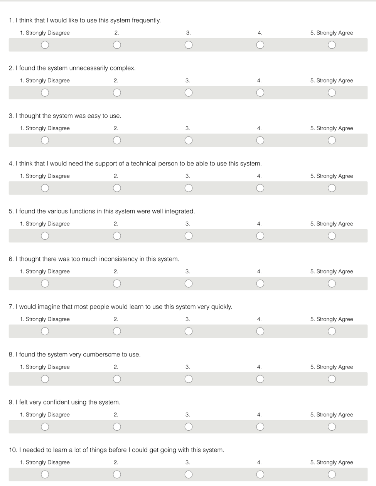

Administrative detaljer
Klient: Bernt Måsøy, Industridesigner
Direktør i PlommeDesign
Navn på nettside: Portobok
Link til vår nettside: www.portobok.no
Teste dokument
For å brukerteste brukte vi SUS-skjema (System usability scale) for å få raske tilbakemeldinger på nettsiden. Vi fikk forsøkspersonene til å navigere seg gjennom siden og ga de i oppgave å gå til en spesifikk person og ett av deres produkt samt sende de en mail gjennom kontaktsiden. Vi utførte syv tester og fikk en SUS-sum på 78 av 100. Under ser du SUS-skjema vi har brukt.
SUS-skjema
Testpublikum
De syv brukertestene ble gjort på studenter fra industriell design i første og andre året. Vi observerte mens de gjorde testene og på den måten fikk vi øyeblikkelig informasjon om hva som kunne forbedres og hva som fungerte. Fire av syv testpersoner var jenter og alderen lå mellom 19 og 25. Deler av vårt antatte publikum til nettsiden var designere og de har vi fått testet på. Vi mangler å teste på arbeidsgivere som er på utskikk etter designere, men disse har vi syntes var utfordrende å finne testpersoner til.
Teste plattformer
Testene ble utført på pc.
Oppsummering av tilbakemeldinger
Vi har fokusert på flere elementer under vår utforming av nettsiden. Deler av fokuset har vært utseende og vi har fått kontruktive tilbakemeldinger på dette fra studenter ved industriell design når disse i utgangspunktet har meninger om dette. For eksempel har vi fått spesifikke tilbakemeldinger på utforming av forsiden blant annet størrelsen på hamburgerbaren og plassering av knappene i navbaren. Andre tilbakemeldinger har vært forståelsen på hva nettsiden er. Vi fikk tilbakemelding på at footern var missvisende, at også denne burde ha sammenheng med hele nettsiden. Testpersonene har hatt en god forståelse på hvordan man navigerer seg gjennom nettsiden. Vi har hatt fokus på at det skal være lett og komme seg til de forskjellige designerene og prosjektene og at det skal være flere måter å komme seg til de sidene på. Vi har brukt hover for å vise at du kan trykke på de forskjellige bildene og inntrykket etter brukertestene er at dette har vært intuitivt.
Vår respons
Vi har jobbet endel med å utforme forsiden. Vi har hørt på de forskjellige tilbakemeldingene og forstått at hovedutfordringen ligger i å skape en sammenheng mellom alle delene av nettiden. Utfordringen med for eksempel footeren har vært at denne var ikke forståelig med tanke på om man derfra skulle kontakte designerne, portobok eller lignende. Det vi har jobbet med var å få alle delene av nettsiden til å gjennomsyre hvem nettsiden var ment for og fokusert på å utforme nettsiden slik at den ser mest mulig profesjonell ut. Ut fra dette forsto vi at alle delene av en nettside budre gjennomsyre hva nettsiden er ment for.
For videre utvikling av nettsiden ville det vært å gjøre den mer modelær. Vi ønsket å begynne å bruke JSON som oppbevaring av data for så å hente ut informasjon derfra til javascript og inni html, men etter samtale med veileder forsto vi at det ikke var der vi burde legge fokuset og at det var med back-end, enn front-end, utforming. Ønsket er å gjøre nettsiden til et sted der designere selv kan lage sin profil, men for å gjøre det trengs det kunneskap om databaser og JSON er kunn en vanskelig måte å gjøre dette på.
Refleksjon
Refleskjonen fra hver av oss står under hvert navn.
Dina
Jenny Marie
Har fått en større forståelse for hvor mye det faktisk ligger i å designe en nettside.
Kristin
Har lært at en enkelt side kan programmeres på mange ulike måter, og samtidig se lik ut. Lagde først designer- og prosjektsiden slik at jeg hadde samme html repetert mange ganger nedover. Fikk da tips om at jeg enkelt kunne gjøre det samme med javaScript. Lærte da verdien ved å bruke javaScript, for enkelt å utvide siden. Har også lært hvor mye jobb som ligger bak en nettside, og hvor utrolig mye som kan pirkes på for å få den akkurat slik man vil ha det.
Har fått veldig god erfaring ed gruppearbeid. Det har vært veldig fint og inspirerende å ha en gruppe som hele tiden står på og driver prosjektet framover. Det har vært godt å ha flere øyne og jevnlig få tilbakemelding på arbeidet som er blitt utført, slik at vi sammen kan gjøre nettsiden best mulig.
Oskar
Solveig
Jeg har lært mye i løpet av dette projektet her. Først og fremst har jeg sett at det er vanskelig å se for seg hvordan en nettside best utformes på forhånd. Men vi har satt pris på det vi hadde fastslått på forhånd slik at det ble lettere å sette i gang å kode uten å måtte diskutere hva som skulle gjøres og hvem som skulle gjøre hva.
Før projektet syntes jeg javascript var vanskelig, og prøvde så langt som mulig å unngå å bruke dette, så fremt det var mulig med CSS. Nå har jeg lært meg Javascript godt igjennom å kode mye og lage koder selv i navigasjonsbaren. Jeg forstått at det er mye ryddigere å kode så mye som mulig i javascript enn i CSS. For når kodene blir lange i CSS kan enkelte små endringer gjøre mye skade å være vanskelig å finne igjen i en lang og rotete kode.
Jeg føler at igjenom dette projektet har jeg fått et godt bilde på hvordan det er å lage en nettside. Og føler at dette har vært helt nødvendig forståelse for videre bruk av denne lærdommen etter dette faget.